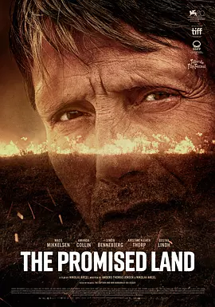

8.3
杂种
The Promised Land
2023
德国
评分 8.3
导演:
尼科莱·阿尔赛
演员:
麦斯·米科尔森 / 阿曼达·科林 / 古斯塔夫·林德
类型:
传记,剧情,历史
剧情简介
18 世纪的日德兰荒原天空低垂，风声裹着沙土在空旷的土地上呼啸。路德维格·卡伦独自踏上这片长期被王室视为荒废之地的边境，他的脚步在泥地里留下深深的痕迹，也像是在替自己写下命运的开端。出身卑微的他久受轻蔑，却选择以全部积蓄去换取一次改变人生的机会——用自己的双手开垦这片被无数人视为绝境的荒原。他在孤寂的清晨挖下第一锄，也在漫长的夜里点起微弱的火光；荒原的寒意不断试探着他的决心。随着土地逐渐被驯服，一座雏形初现的“国王之家”在荒野中慢慢立起。与此同时，当地地头蛇始终在暗处窥视，以威胁、阻挠、拉拢等方式逼迫他放弃。路德维格沉稳而刚毅，每一次拒绝都让双方的对立更为尖锐。荒原的风在加速，冲突的阴影也随之逼近。路德维格明白，想守住自己拼出的未来，不仅要对抗自然，还要面对比荒野更难以驯服的人心。在这片广袤土地上，他的每一个抉择都将改变自身的命运，也牵动着周围人的生活走向。